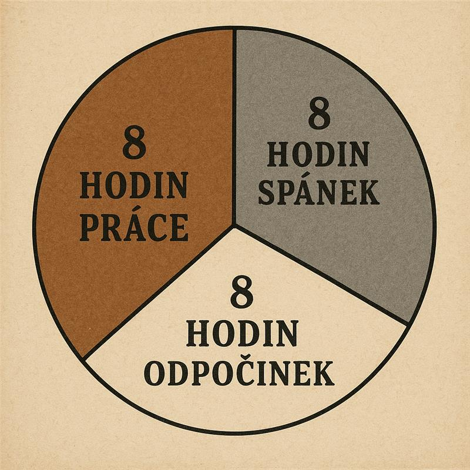
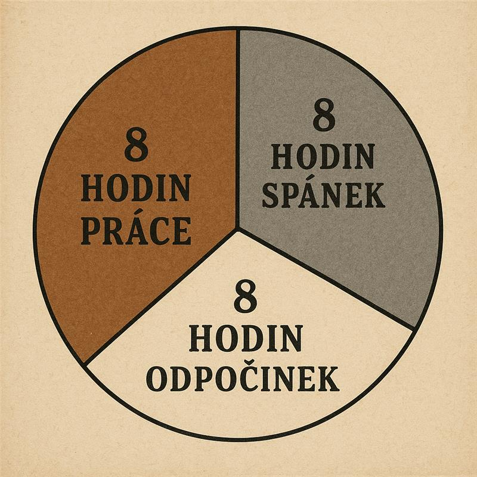
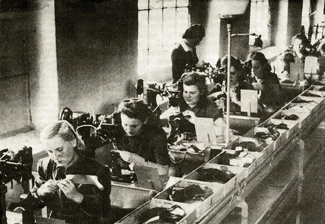

BAŤOVA ŠKOLA PRÁCE
Vítejte na oficiálních stránkách Školy práce Tomáše Bati ve Zlíně – instituce,
která změnila způsob, jakým přemýšlíme o vzdělávání, výchově a práci.
Tato škola není obyčejným vzdělávacím zařízením. Je to místo,
kde se propojuje poctivá práce s charakterovou výchovou, teorie s praxí,
kázeň s osobním růstem. A i když uplynulo již sto let od jejího založení,
její odkaz stále žije a inspiruje další generace.
Od svého počátku v roce 1925 vzniká škola s jasnou vizí – vychovávat mladé lidi,
kteří jsou nejen vzdělaní, ale především zodpovědní, samostatní a odolní. Tomáš Baťa věří,
že škola má člověka připravit na skutečný život, ne jen na zkoušky. A proto buduje prostředí,
kde se učí nejen vědomosti, ale i pracovní návyky, respekt k času,
majetku, kolektivu i sobě samému. Škola se stává místem, kde se formuje charakter.
Dnes, o sto let později, připomínáme nejen minulost,
ale především stále aktuální hodnoty, které Baťova škola představuje.
Na našich stránkách najdete nejen informace o historii, ale také pohled
do každodenního života studentů – do výuky, internátu, volnočasových aktivit,
života v dílnách i mimo školu. Přinášíme vám příběh školy, která formovala
celé generace nejen pro práci, ale i pro život.

Naše škola se nestaví na výkonu jednotlivců,
ale na spolupráci a soudržnosti. Každý student zde nachází své místo,
svou roli a svůj směr. Ať už se rozhodne pro řemeslo, podnikání nebo jinou profesní dráhu,
odnáší si pevný základ – schopnost nést odpovědnost, překonávat překážky a jednat čestně.
To je Baťův odkaz. A ten s hrdostí neseme dál.
Škola práce Tomáše Bati není jen vzpomínkou na minulost – je inspirací pro budoucnost.
Příspěvky
- Zas a znovu! Otevírame dveře všem novým uchazečům!
- Baťovky ve světe, aneb ty nej boty pro vaše nohy!
- Proč právě my? Pro Vaše dítě zajistíme jen ty nejlepší zkušenosti od profíku!.